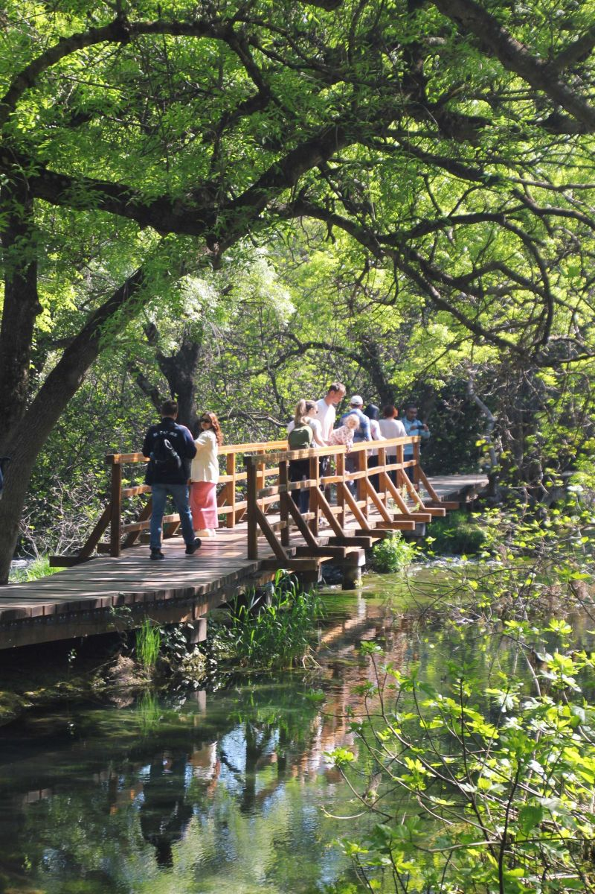
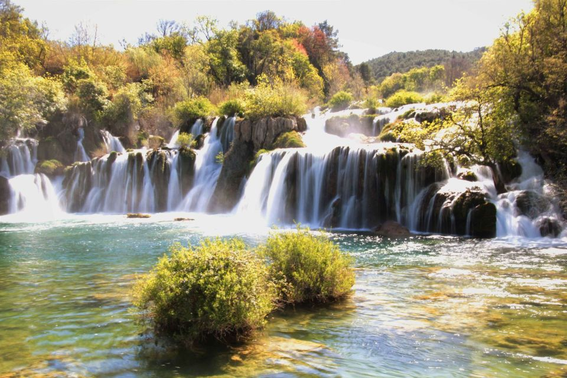
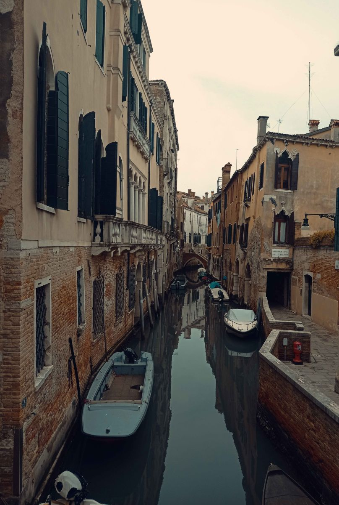
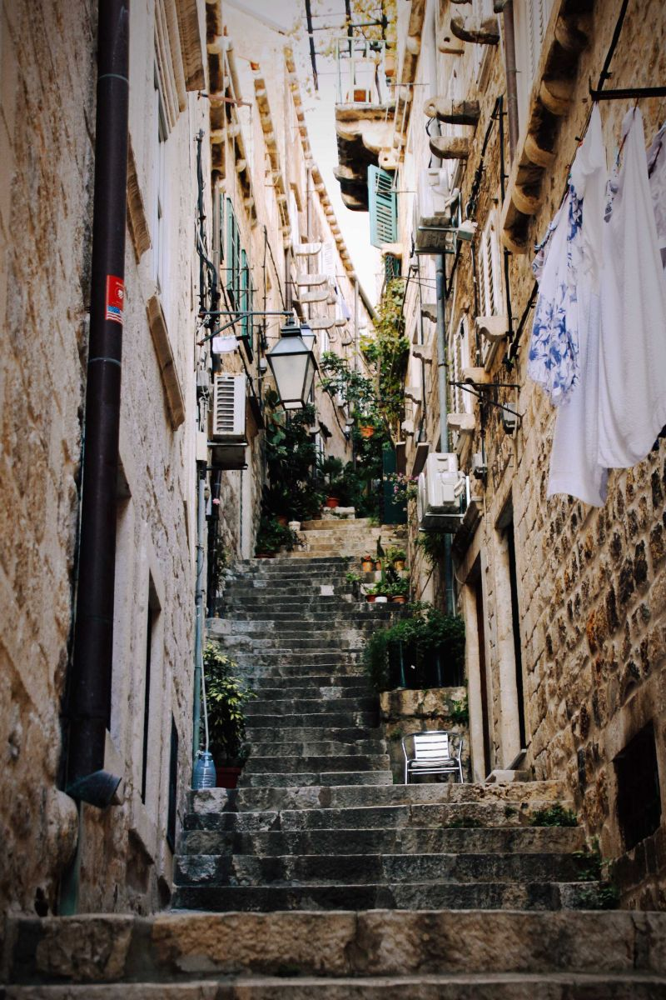

Prikaz Ljudi
Hvatanje scena i emocija u svakom kadru.
Opremljen za portretnu i lifestyle fotografiju s fokusom na prirodno svjetlo i emocije. Svaka slika ima priču, scenu i vrijeme. Uz kameru i vještine mogu ih zabilježiti i podijeliti s vama.
Ovdje možete pronaći moj portfolio, sažetak mog rada i načina na koji mogu pomoći da vaše trenutke pretvorite u trajne uspomene.
Pogledaj galeriju
Neki od pravaca u kojima najviše uživam stvarati.

Hvatanje scena i emocija u svakom kadru.

Dokumentiranje vaših najvažnijih trenutaka bez poziranja.

Ljepota svakodnevice uhvaćena u pravom trenutku.